Plasticity
Training and Testing Set
We generate 10 sets of data for training the neural network (100, 101, 102, 103, 104, 200, 201, 202, 203, 204), 4 sets of data for validating (105, 106, 205, 206) and 1 set of data for testing (300). The setting are as follows (the arrows represents force direction but may indicate different force magnitude; the shaded area indicates fixed sides).


Visualization
Here we show the stress and displacements at the corner of the training and testing data.
| ID | Stress | $u_x$ | $u_y$ |
|---|---|---|---|
| 100 | 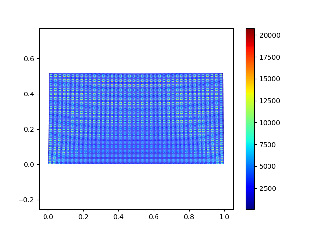 |  |  |
| 101 | 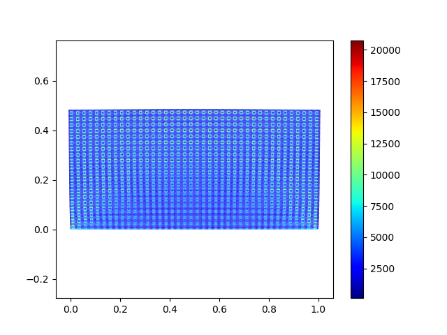 |  |  |
| 102 |  |  |  |
| 103 | 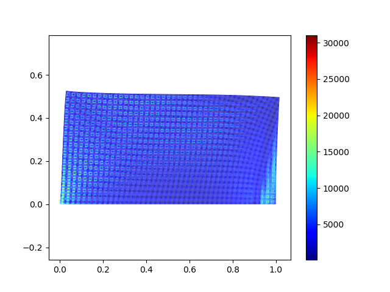 |  |  |
| 104 | 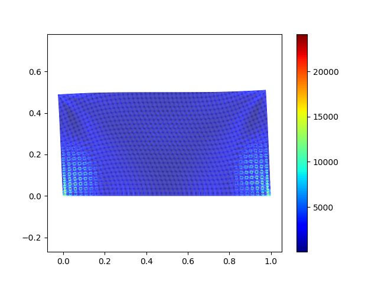 | 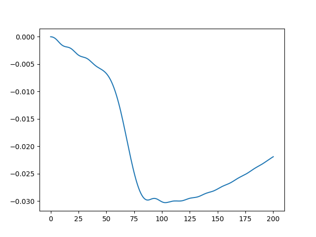 | 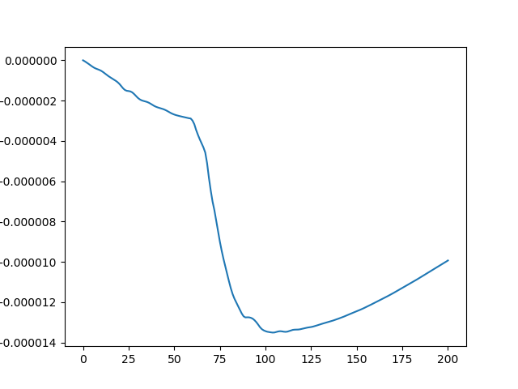 |
| 105 |  |  |  |
| 106 |  |  | 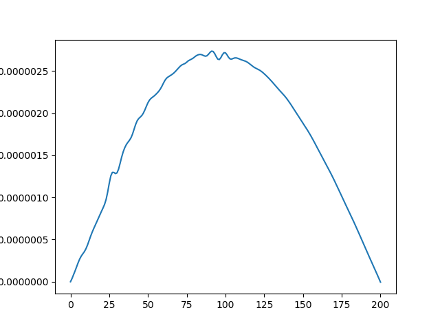 |
| 200 |  | 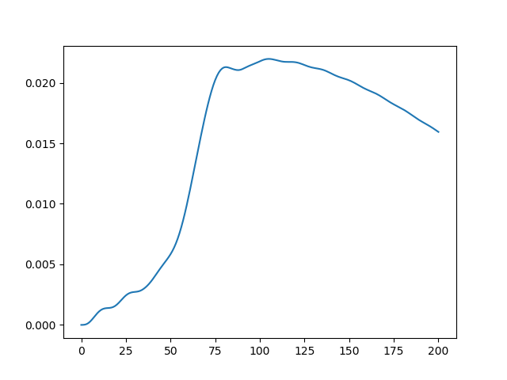 |  |
| 201 | 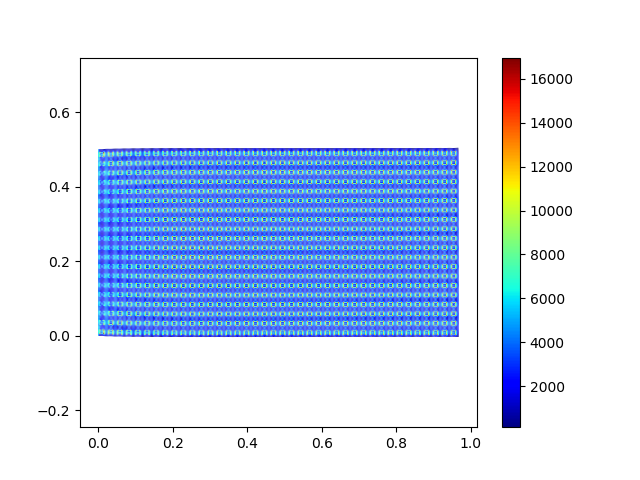 |  | 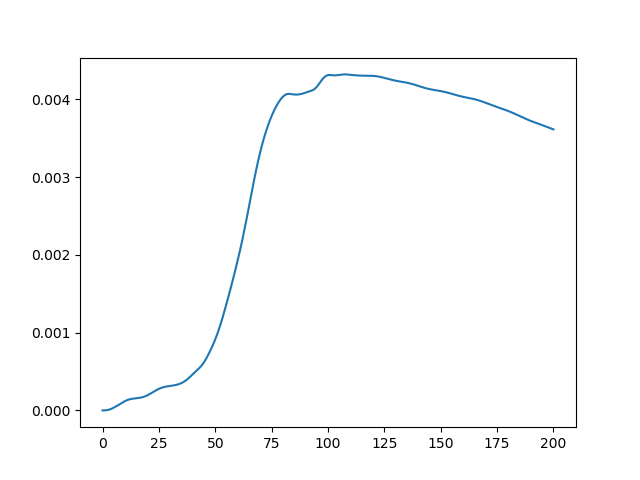 |
| 202 | 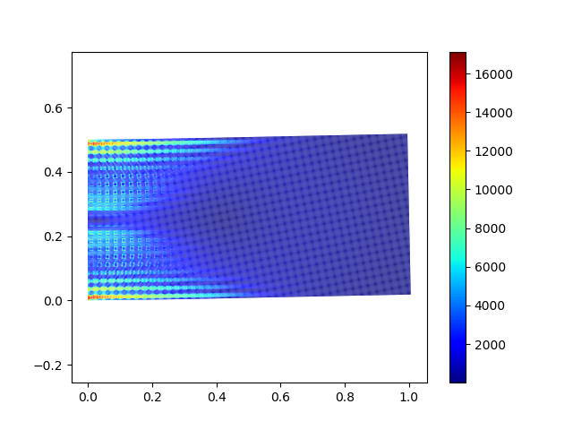 |  | 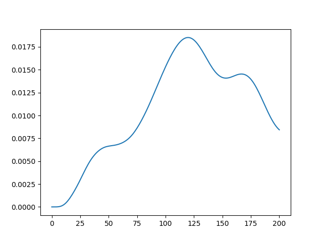 |
| 203 |  |  |  |
| 204 |  | 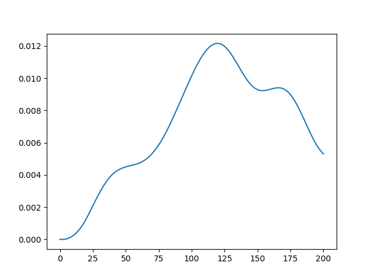 |  |
| 205 |  | 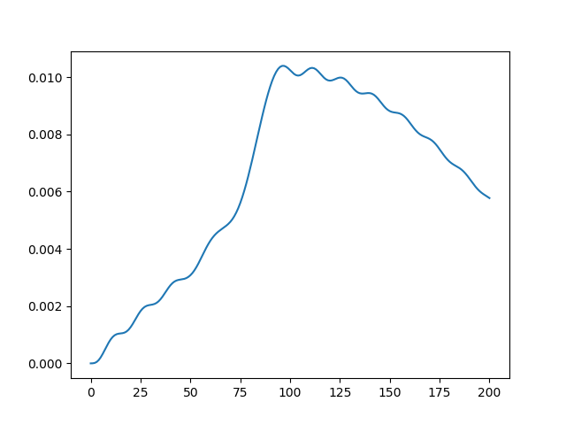 |  |
| 206 |  |  |  |
| 300 | 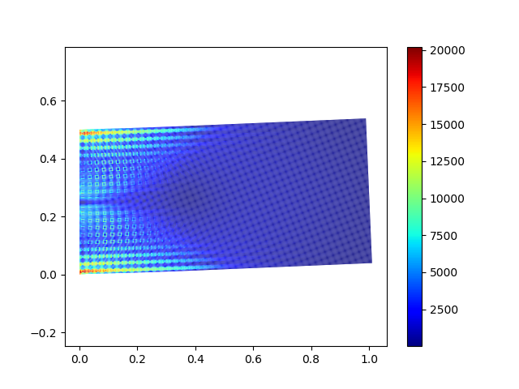 |  |  |